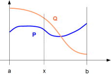
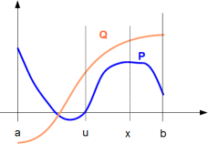

∃x ∈ ]a, b[, Q1 > 0 and ... Qk > 0
In order to understand the idea, we will consider the easier formula
∃x ∈ ]a, b[, P > 0
and Q > 0. We replace it by the disjunction of the following formulas.
-
(∀x ∈ ]a,
b[, P > 0) and
(∀x ∈ ]a, b[, Q >
0)
Either P and Q are strictly
positive over all ]a, b[.

- ∃u ∈ ]a, b[,( ∀x ∈ ]u, b[,
P > 0) and
( ∀x ∈ ]u, b[,
Q > 0) and
[P(u) = 0 or Q(u) =
0]
Or P and Q are only strictly
positive over an interval ]u, b[.
But in
this case, if we take u such that ]u, b[ is the greatest interval such
that P and Q are only strictly positive over it, then either P(u) = 0
or Q(u) = 0.
Indeed, if not, either P(u) > 0 and P(u) > 0 but in
this case, ]u, b[ is NOT the greatest interval such that P and Q are
only strictly positive over it.
Or either P(u) < 0 or Q(u) < 0.
But this is not possible because
P
and Q are continuous fonction ;

-
∃v ∈ ]a, b[, (∀x ∈
]a, v[, P >
0) and
(∀x
∈ ]a, v[, Q >
0) and
[P(v) = 0 or Q(v) = 0]
Or P and Q are only strictly positive over an interval ]a, v[ and P(v) = 0 or P(v) = 0
-
∃u, v ∈ ]a, b[, (∀x
∈ ]u, v[, P >
0) and
(∀x ∈ ]u, v[, Q >
0) and
[P(u) = 0 or Q(u) = 0] and
[P(v)
= 0 or Q(v) = 0]
Or P and Q are only strictly positive over an interval ]u, v[ and [P(u) = 0 or P(u) = 0] and [P(v) = 0 or
P(v) = 0]
- To know how to reduce formulas of the type
(∀x
∈ ]u, v[, Q > 0) follow
me!
- To reduce
∃u ∈ ]a, b[, φ follow me!